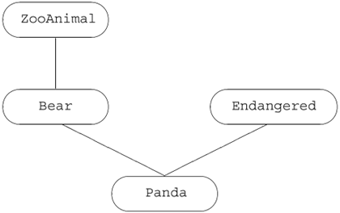
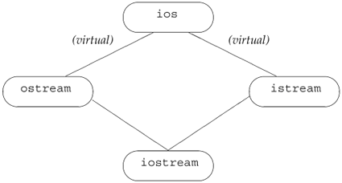
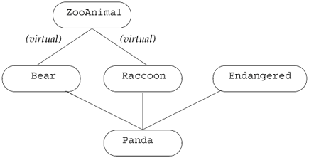
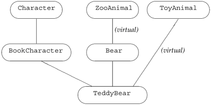

17.3. Multiple and Virtual InheritanceMost C++ applications use public inheritance from a single base class. In some cases, however, single inheritance is inadequate, either because it fails to model the problem domain or the model it imposes is unnecessarily complex. In these cases, multiple inheritance may model the application more directly. Multiple inheritance is the ability to derive a class from more than one immediate base class. A multiply derived class inherits the properties of all its parents. Although simple in concept, the details of intertwining multiple base classes can present tricky design-level and implementation-level problems. 17.3.1. Multiple InheritanceThis section uses a pedagogical example of a zoo animal hierarchy. Our zoo animals exist at different levels of abstraction. There are the individual animals, distinguished by their names, such as Ling-ling, Mowgli, and Balou. Each animal belongs to a species; Ling-Ling, for example, is a giant panda. Species, in turn, are members of families. A giant panda is a member of the bear family. Each family, in turn, is a member of the animal kingdomin this case, the more limited kingdom of a particular zoo. Each level of abstraction contains data and operations that support a wider category of users. We'll define an abstract ZooAnimal class to hold information that is common to all the zoo animals and provides the public interface. The Bear class will contain information that is unique to the Bear family, and so on. In addition to the actual zoo-animal classes, there are auxiliary classes that encapsulate various abstractions such as endangered animals. In our implementation of a Panda class, for example, a Panda is multiply derived from Bear and Endangered. Defining Multiple ClassesTo support multiple inheritance, the derivation list
class Bear : public ZooAnimal {
};
is extended to support a comma-separated list of base classes:
class Panda : public Bear, public Endangered {
};
The derived class specifies (either explicitly or implicitly) the access level public, protected, or private for each of its base classes. As with single inheritance, a class may be used as a base class under multiple inheritance only after it has been defined. There is no language-imposed limit on the number of base classes from which a class can be derived. A base class may appear only once in a given derivation list. Multiply Derived Classes Inherit State from Each Base ClassUnder multiple inheritance, objects of a derived class contain a base-class subobject (Section 15.2.3, p. 565) for each of its base classes. When we write
Panda ying_yang("ying_yang");
the object ying_yang is composed of a Bear class subobject (which itself contains a ZooAnimal base-class subobject), an Endangered class subobject, and the nonstatic data members, if any, declared within the Panda class (see Figure 17.2). Figure 17.2. Multiple Inheritance Panda Hierarchy Derived Constructors Initialize All Base ClassesConstructing an object of derived type involves constructing and initializing all its base subobjects. As is the case for inheriting from a single base class (Section 15.4.1, p. 580), derived constructors may pass values to zero or more of their base classes in the constructor initializer:
// explicitly initialize both base classes
Panda::Panda(std::string name, bool onExhibit)
: Bear(name, onExhibit, "Panda"),
Endangered(Endangered::critical) { }
// implicitly use Bear default constructor to initialize the Bear subobject
Panda::Panda()
: Endangered(Endangered::critical) { }
Order of ConstructionThe constructor initializer controls only the values that are used to initialize the base classes, not the order in which the base classes are constructed. The base-class constructors are invoked in the order in which they appear in the class derivation list. For Panda, the order of base-class initialization is:
For example, in Panda's default constructor, the Bear default constructor is invoked implicitly; it does not appear in the constructor initializer list. Even so, Bear's default constructor is invoked prior to the explicitly listed constructor of Endangered. Order of DestructionDestructors are always invoked in the reverse order from which the constructors are run. In our example, the order in which the destructors are called is ~Panda, ~Endangered, ~Bear, ~ZooAnimal. 17.3.2. Conversions and Multiple Base ClassesUnder single inheritance, a pointer or a reference to a derived class can be converted automatically to a pointer or a reference to a base class. The same holds true with multiple inheritance. A pointer or reference to a derived class can be converted to a pointer or reference to any of its base classes. For example, a Panda pointer or reference could be converted to a pointer or a reference to ZooAnimal, Bear, or Endangered:
// operations that take references to base classes of type Panda
void print(const Bear&);
void highlight(const Endangered&);
ostream& operator<<(ostream&, const ZooAnimal&);
Panda ying_yang("ying_yang"); // create a Panda object
print(ying_yang); // passes Panda as reference to Bear
highlight(ying_yang); // passes Panda as reference to Endangered
cout << ying_yang << endl; // passes Panda as reference to ZooAnimal
Under multiple inheritance, there is a greater possibility of encountering an ambiguous conversion. The compiler makes no attempt to distinguish between base classes in terms of a derived-class conversion. Converting to each base class is equally good. For example, if there was an overloaded version of print
void print(const Bear&);
void print(const Endangered&);
an unqualified invocation of print with a Panda object
Panda ying_yang("ying_yang");
print(ying_yang); // error: ambiguous
results in a compile-time error that the call is ambiguous.
Virtual Functions under Multiple InheritanceTo see how the virtual function mechanism is affected by multiple inheritance, let's assume that our classes define the virtual members listed in Table 17.2.
Lookup Based on Type of Pointer or ReferenceAs with single inheritance, a pointer or reference to a base class can be used to access only members defined (or inherited) in the base. It cannot access members introduced in the derived class. When a class inherits from multiple base classes, there is no implied relationship between those base classes. Using a pointer to one base does not allow access to members of another base. As an example, we could use a pointer or reference to a Bear, ZooAnimal, Endangered, or Panda to access a Panda object. The type of the pointer we use determines which operations are accessible. If we use a ZooAnimal pointer, only the operations defined in that class are usable. The Bear-specific, Panda-specific, and Endangered portions of the Panda interface are inaccessible. Similarly, a Bear pointer or reference knows only about the Bear and ZooAnimal members; an Endangered pointer or reference is limited to the Endangered members:
Bear *pb = new Panda("ying_yang");
pb->print(cout); // ok: Panda::print(ostream&)
pb->cuddle(); // error: not part of Bear interface
pb->highlight(); // error: not part of Bear interface
delete pb; // ok: Panda::~Panda()
If the Panda object had been assigned to a ZooAnimal pointer, this set of calls would resolve exactly the same way. When a Panda is used via an Endangered pointer or reference, the Panda-specific and Bear portions of the Panda interface are inaccessible:
Endangered *pe = new Panda("ying_yang");
pe->print(cout); // ok: Panda::print(ostream&)
pe->toes(); // error: not part of Endangered interface
pe->cuddle(); // error: not part of Endangered interface
pe->highlight(); // ok: Endangered::highlight()
delete pe; // ok: Panda::~Panda()
Determining Which Virtual Destructor to UseAssuming all the root base classes properly define their destructors as virtual, then the handling of the virtual destructor is consistent regardless of the pointer type through which we delete the object:
// each pointer points to a Panda
delete pz; // pz is a ZooAnimal*
delete pb; // pb is a Bear*
delete pp; // pp is a Panda*
delete pe; // pe is a Endangered*
Assuming each of these pointers points to a Panda object, the exact same order of destructor invocations occurs in each case. The order of destructor invocations is the reverse of the constructor order: The Panda destructor is invoked through the virtual mechanism. Following execution of the Panda destructor, the Endangered, Bear, then ZooAnimal destructors are invoked in turn.
17.3.3. Copy Control for Multiply Derived ClassesThe memberwise initialization, assignment and destruction (Chapter 13) of a multiply derived class behaves in the same way as under single inheritance. Each base class is implicitly constructed, assigned or destroyed, using that base class' own copy constructor, assignment operator or destructor. Let's assume that Panda uses the default copy control members. Using the default copy constructor, the initialization of ling_ling
Panda ying_yang("ying_yang"); // create a Panda object
Panda ling_ling = ying_yang; // uses copy constructor
invokes the Bear copy constructor, which in turn runs the ZooAnimal copy constructor prior to executing the Bear copy constructor. Once the Bear portion of ling_ling is constructed, the Endangered copy constructor is run to create that part of the object. Finally, the Panda copy constructor is run. The synthesized assignment operator behaves similarly to the copy constructor. It assigns the Bear (and through Bear, the ZooAnimal) parts of the object first. Next, it assigns the Endangered part, and finally the Panda part. The synthesized destructor destroys each member of the Panda object and calls the destructors for the base class parts, in reverse order from construction.
17.3.4. Class Scope under Multiple InheritanceClass scope (Section 15.5, p. 590) is more complicated in multiple inheritance because a derived scope may be enclosed by multiple base class scopes. As usual, name lookup for a name used in a member function starts in the function itself. If the name is not found locally, then lookup continues in the member's class and then searches each base class in turn. Under multiple inheritance, the search simultaneously examines all the base-class inheritance subtreesin our example, both the Endangered and the Bear/ZooAnimal subtrees are examined in parallel. If the name is found in more than one subtree, then the use of that name must explicitly specify which base class to use. Otherwise, the use of the name is ambiguous.
Multiple Base Classes Can Lead to AmbiguitiesAssume both Bear and Endangered define a member named print. If Panda does not define that member, then a statement such as the following
ying_yang.print(cout);
results in a compile-time error. The derivation of Panda, which results in Panda having two members named print, is perfectly legal. The derivation results in only a potential ambiguity. That ambiguity is avoided if no Panda object ever calls print. The error would also be avoided if each call to print specifically indicated which version of print was wantedBear::print or Endangered::print. An error is issued only if there is an ambiguous attempt to use the member. If a declaration is found only in one base-class subtree, then the identifier is resolved and the lookup algorithm concludes. For example, class Endangered might have an operation to return the given estimated population of its object. If so, the following call
ying_yang.population();
would compile without complaint. The name population would be found in the Endangered base class and does not appear in Bear or any of its base classes. Name Lookup Happens FirstAlthough the ambiguity of the two inherited print members is reasonably obvious, it might be more surprising to learn that an error would be generated even if the two inherited functions had different parameter lists. Similarly, it would be an error even if the print function were private in one class and public or protected in the other. Finally, if print were defined in ZooAnimal and not Bear, the call would still be in error. As always, name lookup happens in two steps (Section 7.8.1, p. 268): First the compiler finds a matching declaration (or, in this case, two matching declarations, which causes the ambiguity). Only then does the compiler decide whether the declaration it found is legal. Avoiding User-Level AmbiguitiesWe could resolve the print ambiguity by specifying which class to use:
ying_yang.Endangered::print(cout);
The best way to avoid potential ambiguities is to define a version of the function in the derived class that resolves the ambiguity. For example, we should give our Panda class a print function that chooses which version of print to use:
std::ostream& Panda::print(std::ostream &os) const
{
Bear::print(os); // print the Bear part
Endangered::print(os); // print the Endangered part
return os;
}
17.3.5. Virtual InheritanceUnder multiple inheritance, a base class can occur multiple times in the derivation hierarchy. In fact, our programs have already used a class that inherits from the same base class more than once through its inheritance hierarchy. Each of the IO library classes inherits from a common abstract base class. That abstract class manages the condition state of the stream and holds the buffer that the stream reads or writes. The istream and ostream classes inherit directly from this common base class. The library defines another class, named iostream, that inherits from both istream and ostream. The iostream class can both read and write a stream. A simplified version of the IO inheritance hierarchy is illustrated in Figure 17.3 on the facing page. Figure 17.3. Virtual Inheritance iostream Hierarchy (Simplified) As we know, a multiply inherited class inherits state and action from each of its parents. If the IO types used normal inheritance, then each iostream object would contain two ios subobjects: one instance contained within its istream subobject and the other within its ostream subobject. From a design perspective, this implementation is just wrong: The iostream class wants to read to and write from a single buffer; it wants the condition state to be shared across input and output operations. If there are two separate ios objects, this sharing is not possible. In C++ we solve this kind of problem by using virtual inheritance. Virtual inheritance is a mechanism whereby a class specifies that it is willing to share the state of its virtual base class. Under virtual inheritance, only one, shared base-class subobject is inherited for a given virtual base regardless of how many times the class occurs as a virtual base within the derivation hierarchy. The shared base-class subobject is called a virtual base class. The istream and ostream classes inherit virtually from their base class. By making their base class virtual, istream and ostream specify that if some other class, such as iostream, inherits from both of them, then only one copy of their common base class will be present in the derived class. We make a base class virtual by including the keyword virtual in the derivation list:
class istream : public virtual ios { ... };
class ostream : virtual public ios { ... };
// iostream inherits only one copy of its ios base class
class iostream: public istream, public ostream { ... };
A Different Panda ClassFor the purposes of illustrating virtual inheritance, we'll continue to use the Panda class as a pedagogical example. Within zoological circles, for more than 100 years there has been an occasionally fierce debate as to whether the Panda belongs to the Raccoon or the Bear family. Because software design is primarily a service industry, our most practical solution is to derive Panda from both:
class Panda : public Bear,
public Raccoon, public Endangered {
};
Our virtual inheritance Panda hierarchy is pictured in Figure 17.4. If we examine that hierarchy, we notice a nonintuitive aspect of virtual inheritance: The virtual derivation (in our case, of Bear and Raccoon) has to be made prior to any actual need for it to be present. Virtual inheritance becomes necessary only with the declaration of Panda, but if Bear and Raccoon are not already virtually derived, the designer of the Panda class is out of luck. Figure 17.4. Virtual Inheritance Panda Hierarchy In practice, the requirement that an intermediate base class specify its inheritance as virtual rarely causes any problems. Ordinarily, a class hierarachy that uses virtual inheritance is designed at one time by either one individual or a project design group. It is exceedingly rare for a class to be developed independently that needs a virtual base in one of its base classes and in which the developer of the new base class cannot change the existing hierarchy. 17.3.6. Virtual Base Class DeclarationA base class is specified as being derived through virtual inheritance by modifying its declaration with the keyword virtual. For example, the following declarations make ZooAnimal a virtual base class of both Bear and Raccoon:
// the order of the keywords public and virtual is not significant
class Raccoon : public virtual ZooAnimal { /* ... */ };
class Bear : virtual public ZooAnimal { /* ... */ };
The virtual specifier states a willingness to share a single instance of the named base class within a subsequently derived class. Any class that can be specified as a base class also could be specified as a virtual base class. A virtual base may contain any class element normally supported by a nonvirtual base class. Normal Conversions to Base Are SupportedAn object of the derived class can be manipulated as usual through a pointer or a reference to a base-class type even though the base class is virtual. For example, all of the following Panda base class conversions execute correctly even though Panda inherits its ZooAnimal part as a virtual base:
void dance(const Bear*);
void rummage(const Raccoon*);
ostream& operator<<(ostream&, const ZooAnimal&);
Panda ying_yang;
dance(&ying_yang); // ok: converts address to pointer to Bear
rummage(&ying_yang); // ok: converts address to pointer to Raccoon
cout << ying_yang; // ok: passes ying_yang as a ZooAnimal
Visibility of Virtual Base-Class MembersMultiple-inheritance hierarchies using virtual bases pose fewer ambiguity problems than do those without virtual inheritance.
Assume a member named X is inherited through more than one derivation path. There are three possibilities:
As in a nonvirtual multiple inheritance hierarchy, ambiguities of this sort are best resolved by the class providing an overriding instance in the derived class.
17.3.7. Special Initialization SemanticsOrdinarily each class initializes only its own direct base class(es). This initialization strategy fails when applied to a virtual base class. If the normal rules were used, then the virtual base might be initialized multiple times. The class would be initialized along each inheritance path that contains the virtual base. In our ZooAnimal example, using normal initialization rules would result in both Bear and Raccoon attempting to initialize the ZooAnimal part of a Panda object. To solve this duplicate-initialization problem, classes that inherit from a class that has a virtual base have special handling for initialization. In a virtual derivation, the virtual base is initialized by the most derived constructor. In our example, when we create a Panda object, the Panda constructor alone controls how the ZooAnimal base class is initialized. Although the virtual base is initialized by the most derived class, any classes that inherit immediately or indirectly from the virtual base usually also have to provide their own initializers for that base. As long as we can create independent objects of a type derived from a virtual base, that class must initialize its virtual base. These initializers are used only when we create objects of the intermediate type. In our hierarchy, we could have objects of type Bear, Raccoon, or Panda. When a Panda is created, it is the most derived type and controls initialization of the shared ZooAnimal base. When a Bear (or a Raccoon) is created, there is no further derived type involved. In this case, the Bear (or Raccoon) constructors directly initialize their ZooAnimal base as usual:
Bear::Bear(std::string name, bool onExhibit):
ZooAnimal(name, onExhibit, "Bear") { }
Raccoon::Raccoon(std::string name, bool onExhibit)
: ZooAnimal(name, onExhibit, "Raccoon") { }
The Panda constructor also initializes the ZooAnimal base, even though it is not an immediate base class:
Panda::Panda(std::string name, bool onExhibit)
: ZooAnimal(name, onExhibit, "Panda"),
Bear(name, onExhibit),
Raccoon(name, onExhibit),
Endangered(Endangered::critical),
sleeping_flag(false) { }
When a Panda is created, it is this constructor that initializes the ZooAnimal part of the Panda object. How a Virtually Inherited Object Is ConstructedLet's look at how objects under virtual inheritance are constructed.
Bear winnie("pooh"); // Bear constructor initializes ZooAnimal
Raccoon meeko("meeko"); // Raccoon constructor initializes ZooAnimal
Panda yolo("yolo"); // Panda constructor initializes ZooAnimal
When a Panda object is created,
If the Panda constructor does not explicitly initialize the ZooAnimal base class, then the ZooAnimal default constructor is used. If ZooAnimal doesn't have a default constructor, then the code is in error. The compiler will issue an error message when the definition of Panda's constructor is compiled. Constructor and Destructor Order
For example, in the following whimsical TeddyBear derivation, there are two virtual base classes: the ToyAnimal base class and the indirect ZooAnimal base class from which Bear is derived:
class Character { /* ... */ };
class BookCharacter : public Character { /* ... */ };
class ToyAnimal { /* ... */ };
class TeddyBear : public BookCharacter,
public Bear, public virtual ToyAnimal
{ /* ... */ };
Figure 17.5. Virtual Inheritance TeddyBear Hierarchy The immediate base classes are examined in declaration order to determine whether there are any virtual base classes. In our example, the inheritance subtree of BookCharacter is examined first, then that of Bear, and finally that of ToyAnimal. Each subtree is examined starting at the root class down to the most derived class. The order in which the virtual base classes are constructed for TeddyBear is ZooAnimal followed by ToyAnimal. Once the virtual base classes are constructed, the nonvirtual base-class constructors are invoked in declaration order: BookCharacter, which causes the Character constructor to be invoked, and then Bear. Thus, to create a TeddyBear, the constructors are invoked in the following order:
ZooAnimal(); // Bear's virtual base class
ToyAnimal(); // immediate virtual base class
Character(); // BookCharacter's nonvirtual base class
BookCharacter(); // immediate nonvirtual base class
Bear(); // immediate nonvirtual base class
TeddyBear(); // most derived class
where the initializers used for ZooAnimal and ToyAnimal are specified by the most derived class TeddyBear. The same construction order is used in the synthesized copy constructor; the base classes also are assigned in this order in the synthesized assignment operator. The order of base-class destructor calls is guaranteed to be the reverse order of constructor invocation.
|